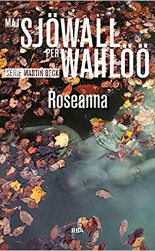

Libros que arrasan

Asesinato en el Comité Central

Asesinos sin rostro

La última causa perdida

Las sombras de Quirke

Muerte en mar abierto

Pista negra

Restos mortales

Roseanna

Todo Marlowe

El halcón maltés
Autores más vendidos
 Autor_ Antonio Manzini.jpg)
Antonio Manzini
"Yo soy actor, guionista y dramaturgo, y el hecho de interpretar me enseñó a trabajar con las palabras y a percibir su efecto en el público, me enseñó a vivir las historias desde dentro, me enseñó a construir personajes y me enseñó a detectar los nudos y los giros de cada relato".
 Autor_ Benjamin Black.jpg)
Benjamin Black
"Siempre he vivido aislado. Me encanta. Como dijo un amigo también escritor, llevo esperando esto toda mi vida. Me gusta el silencio a mi alrededor".
 Autora_ Donna Leon.jpg)
Donna Leon
"La capacidad de hablar, tienes la imagen en la cabeza y la explicas. Por el lenguaje transmitimos ideas, conceptos, es algo mágico".